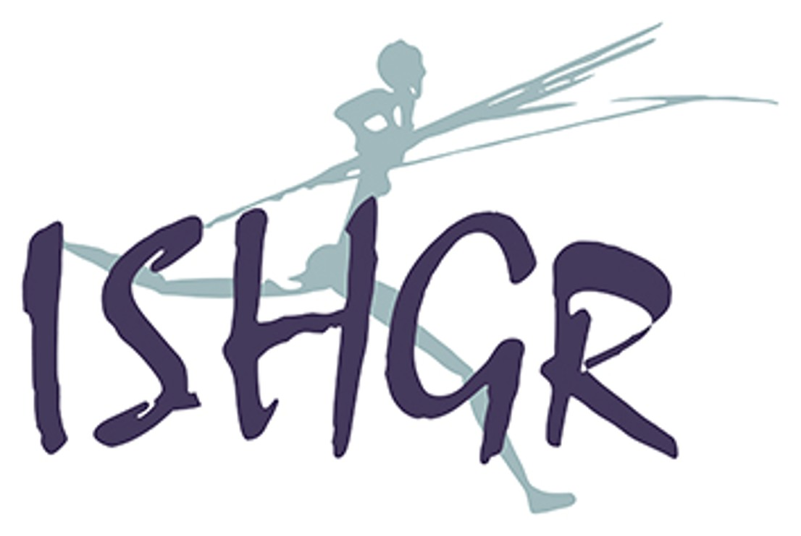
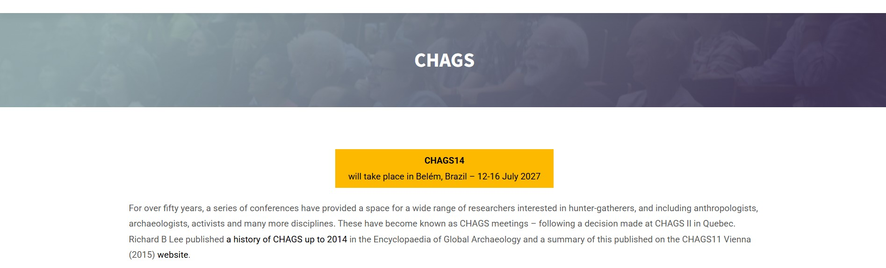

Global Research
Presentations and comparative perspectives from researchers around the world.
International Society for Hunter-Gatherer Research
Research, education, and innovation on hunter-gatherer societies brought together in the heart of Belém, Pará, Brazil.

Explore ISHGR publications, board members, and the history of the society.
The 14th International Conference of the ISHGR (CHAGS 14) brings together an international community studying hunter-gatherer societies, human histories, and ecological relationships.
Hosted in the Amazon, the conference creates space for researchers and communities to exchange perspectives, share knowledge, and discuss the challenges and resilience of foraging peoples.
Presentations and comparative perspectives from researchers around the world.
Connecting different experiences, methods, and ways of knowing.
Building lasting connections across generations and research networks.
Announcements, calls, and updates as CHAGS 14 approaches.

From July 12 to 16, 2027, Belém will host the 14th ISHGR Conference, bringing researchers and community voices together to discuss the future of hunter-gatherer societies.

Proposal submissions, posters, and discussion-circle proposals are expected to open on February 15, 2027. Visit the calls page for guidelines and accepted formats.
Institutional support and coordination for the 2027 edition in Belém.

Federal University of Pará
Emílio Goeldi Paraense Museum
University of Nevada